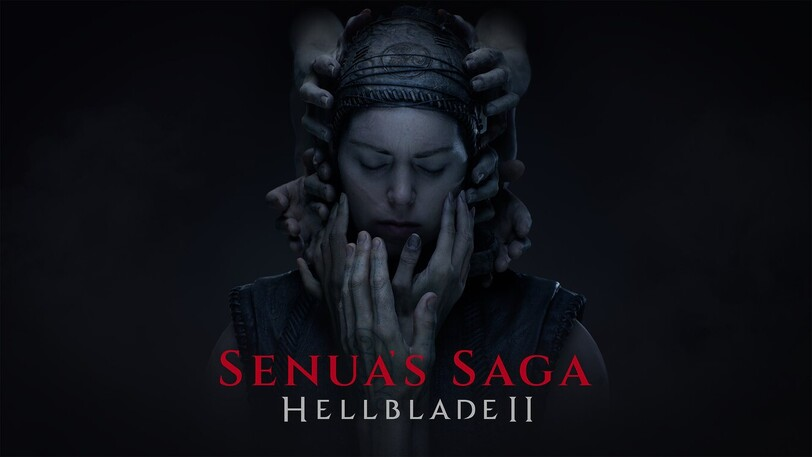

Xbox
Descubre el emocionante mundo de Xbox, una plataforma líder en juegos y entretenimiento. Explora los últimos títulos, accesorios innovadores y más.
Juegos Destacados
-
Forza MotorSport
Experimenta la adrenalina de las carreras en uno de los simuladores de conducción más realistas. Forza MotorSport te lleva a la pista con gráficos impresionantes y una amplia variedad de vehículos.
-
Hellblade 2
Sumérgete en un mundo oscuro y lleno de acción con Hellblade 2. Desarrollado por Ninja Theory, este juego ofrece una experiencia única que combina narrativa intensa y combate emocionante.
Noticias y Novedades
Xbox Series X, en oferta justo a tiempo para Reyes Magos
La potente videoconsola de Microsoft sigue manteniendo un preciazo para no dejar escapar.
Entre otras cosas, la presente Navidad de 2023 será recordada dentro del sector gaming por ser la primera en la que hemos podido acceder a las nuevas videoconsolas next-gen de Sony y Microsoft sin inconvenientes, a buenos precios y sin esperas interminables. Al fin tenemos suficiente stock de todas ellas y estas protagonizan, de una vez por todas, muchos de los regalos navideños de este año.
Xbox Series X es un caramelito con el que dar el salto a la next-gen gastando relativamente poco. Porque a este precio, bastante por debajo de su PVP, no tiene rival si buscamos jugar a resolución 4K a los títulos más recientes en hasta 120 FPS. Además, la consola de Microsoft cuenta con un genial diseño y viene con un mando de última generación en color negro.
Series X nos abre la puerta a tecnologías tan interesantes como Quick Resume o FPS Boost, que elevan nuestra experiencia de juego a otro nivel. Su extenso catálogo no deja de crecer con títulos de la talla de A Plague Tale: Requiem, Scorn o Starfield. Y además, podemos sacarle aún más partido mediante la suscripción a Game Pass, que le viene como anillo al dedo.
Fuente: 3DJuegos
Accesorios y Características
Nada debería interponerse entre tú y los juegos que aprecias. Xbox se esfuerza por eliminar las barreras y capacitar a los jugadores para que jueguen a su manera. La Xbox Series X|S y Xbox One ofrecen diversas características de accesibilidad, como el Xbox Adaptive Controller, que permite crear una experiencia de control personalizada conectándose a conmutadores, botones, soportes y joystick externos, haciendo que los juegos sean más accesibles. Además, la función Copilot vincula dos controles para usarlos como uno solo, y la asignación de botones personalizada se puede configurar con la aplicación Accesorios de Xbox. La compatibilidad con mouse y teclado facilita la navegación, y la configuración rápida permite cambiar características de accesibilidad sin salir del juego. Características como la lupa, contraste alto, filtros de color y modo nocturno personalizan la experiencia visual. La transcripción de voz a texto, comandos de voz con Xbox para Alexa y el Asistente de Google, el narrador y subtítulos mejoran la experiencia auditiva. El programa de Embajadores de Xbox se centra en la accesibilidad, y Xbox Assist brinda soporte personalizado con guías, videos y sugerencias para optimizar la experiencia de juego.
Multimedia
Sumérgete en el mundo de Xbox con tráilers, videos promocionales y contenido multimedia emocionante. No te pierdas ni un solo momento de la acción.
Comunidad Xbox
Conéctate con otros jugadores y forma parte de la comunidad Xbox. Descubre eventos, comparte experiencias y participa en conversaciones apasionantes sobre tus juegos favoritos. En Xbox, creemos que los juegos son para todos y nos esforzamos por hacer que la vida sea más divertida para miles de millones de personas en todo el mundo mediante experiencias de juego inclusivas. Celebramos la diversidad y estamos abiertos a nuevas ideas, acogiendo a todas las personas en nuestra comunidad y reconociendo la singularidad de nuestros aficionados. Nos esforzamos por eliminar barreras y capacitar a los jugadores para que personalicen su manera de jugar, asegurándonos de que nada se interponga entre ellos y los juegos que aprecian. Creemos que los juegos deben ser accesibles para todos, y trabajamos continuamente para crear un entorno donde todos puedan jugar de manera responsable, dentro de los límites que establecen, y disfrutar de experiencias libres de miedo e intimidación. Únete a nuestra comunidad Xbox y descubre un espacio donde la diversidad es valorada, la accesibilidad es prioritaria y la seguridad de todos los jugadores es fundamental. Para obtener más información sobre juegos accesibles, visita nuestro enlace dedicado.